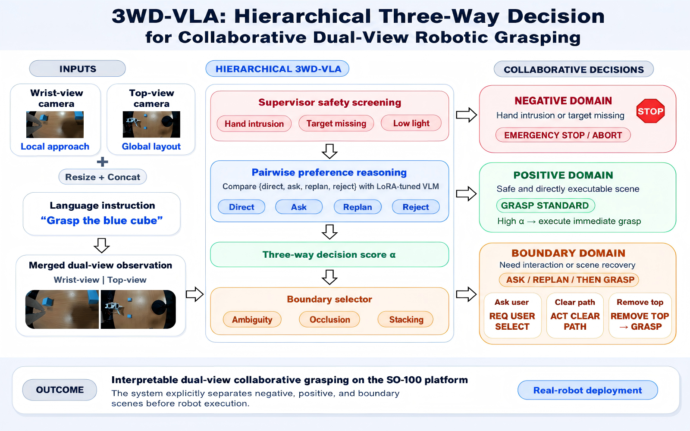
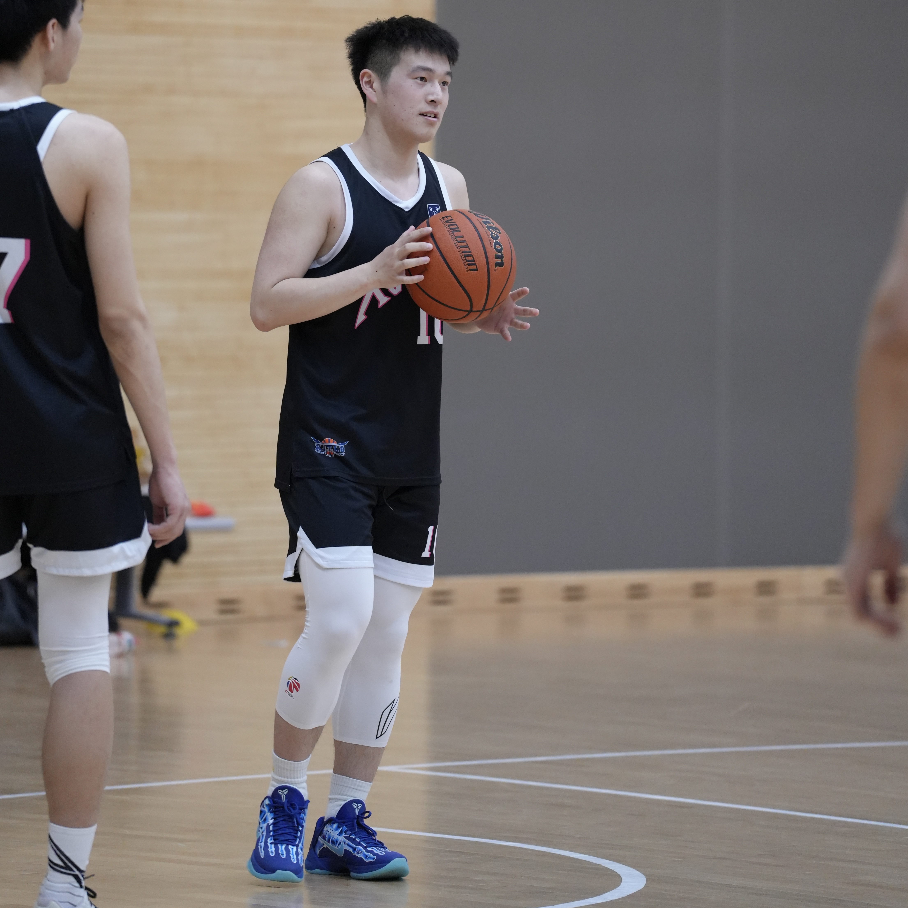
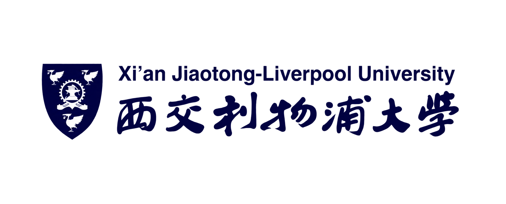

3WD-VLA: Hierarchical Three-Way Decision for Collaborative Dual-View Robotic Grasping
Accepted at the 22nd EAI International Conference on Collaborative Computing: Networking, Applications and Worksharing.
Tactile Sensing · Embodied AI · Robot Learning
I work on tactile-guided Vision-Language-Action (VLA) systems for contact-rich robotic manipulation.

Let’s talk
Interested in tactile sensing, VLA, or robotic manipulation?
Feel free to get in touch.
Current focus
Using three-way decisions to defer unreliable actions under ambiguity, occlusion, and human-hand intrusion.
Combining vision-based tactile sensing with single-arm and bimanual control for contact-rich tasks.
Connecting frozen VLA backbones with tactile-conditioned decoders for high-frequency action correction.
Research output
* denotes equal contribution.

Accepted at the 22nd EAI International Conference on Collaborative Computing: Networking, Applications and Worksharing.
Academic path

Advisor: Prof. Rui Chen
CVPR 2026 Embodied AI Workshop
Advisor: Prof. Xinheng Wang
Updates
Toolkit